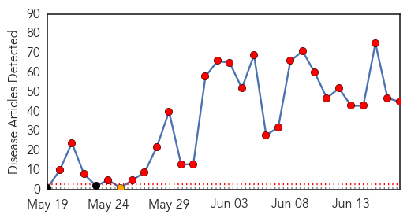
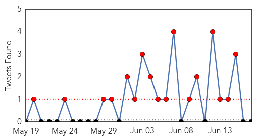
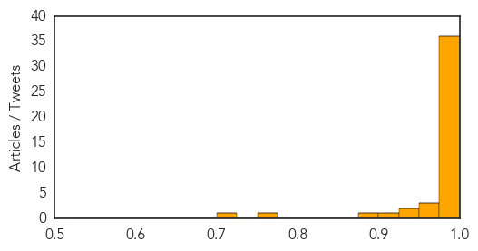
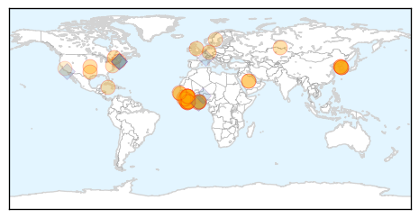
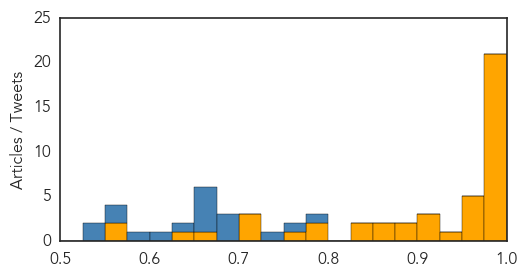

MERS
30-Day Web Trend
27 alerts, 1 warnings

30-Day Twitter Trend
17 alerts, 0 warnings

Article Locations

Article Confidences
Top Articles:
- 1.000
- General Studies (GS) Preparation on IAS, CDS, NDA, Engineering Services & other Entrance Exams at Prepsure.com
- 0.999
- MERS-CoV FAQs
- 0.999
- Vietnam’s health ministry sets up hotline, runs training courses to cope with MERS
- 0.999
- MERS outbreak in Republic of Korea is ‘wake-up call’ for highly mobile world – UN health agency
- 0.999
- trivalleycentral.com: Health And Wellness
- 0.999
- 65-Year-Old Man In Germany Dies From MERS: Europe On Alert : LIFE : Tech Times
- 0.999
- MERS coronavirus a bigger threat to Australasia than Ebola, experts say
- 0.999
- South Korea Mers death toll hits 20 amid alarm over new infections detected outside quarantine
- 0.999
- DOH to private hospitals: Stop MERS, take patients’ history
- 0.999
- WHO panel rules no MERS emergency as Korea notes more cases
- 0.999
- MERS Death Toll in S. Korea Reaches 20
- 0.999
- WHO reaffirms MERS no sustained human-to-human transmission - Xinhua
- 0.999
- Middle East respiratory syndrome
- 0.999
- (3rd LD) S. Korea reports additional death from MERS, 8 new cases
- 0.998
- MERS virus is not a global emergency, says WHO
- 0.998
- Govt issues MERS warning for pilgrims
- 0.998
- MERS coronavirus a bigger threat to Australia than Ebola, experts say
- 0.998
- Vietnam’s health ministry sets up hotline, runs training courses to cope with MERS
- 0.998
- Spotlight: Europe on alarm after first MERS death in Germany - Xinhua
- 0.998
- South Korea MERS death toll at 20; 8 more cases diagnosed
- 0.998
- South Korea continues to battle MERS outbreak
- 0.997
- Racing to treat MERS patients - Regional
- 0.997
- Tennessee releases an "ALERT" to healthcare providers in the Volunteer State
- 0.997
- Eight more in South Korea catch MERS
- 0.997
- WHO says South Korea's MERS outbreak 'wake-up call' as new cases reported
- 0.996
- Managing the threat
- 0.996
- Czech young man ruled out MERS infection, Europe on alert - Xinhua
- 0.995
- MERS claims healthy victims, news, Health News, AsiaOne YourHealth
- 0.995
- WHO reaffirms MERS no sustained human-to-human transmission
- 0.994
- WHO Calls MERS Outbreak A Wake-Up Call
- 0.993
- South Korea begins plasma treatment trial for Mers
- 0.991
- Why no MERS vaccine? Lack of foresight frustrates scientists
- 0.989
- MERS’s best friend is ignorance, so it’s time to wise up
- 0.988
- DOH tells private hospitals: Philippines ready for MERS-CoV
- 0.988
- MERS deaths rise to 20 in South Korea
- 0.985
- One paragraph that explains why we know so little about the MERS virus
- 0.973
- Man dies in Germany from Mers virus complications
- 0.964
- South Korea MERS cases rise to 162
- 0.958
- Government announces protection measures over MERS-CoV
- 0.942
- Four more MERS cases lift South Korea’s total to 154
- 0.927
- News Scan for Jun 17, 2015
- 0.906
- PH remains free of MERS, health official says
- 0.899
- Mers outbreak prompts wave of flight cancellations
- 0.760
- Dept of Disease Control issues travel guidelines in response to MERS
- 0.710
- Qatar reports recovery of Coronavirus patient
Top Tweets:
-
No tweets found for Jun 17, 2015
Ebola
30-Day Web Trend
0 alerts, 0 warnings

30-Day Twitter Trend
0 alerts, 0 warnings

Article Locations
Article Confidences
Top Articles:
- 1.000
- After Ebola, Is the US Ready for MERS?
- 1.000
- Over 300 Ebola deaths traced back to a healer in Sierra Leone
- 0.999
- Ebola genetic code analysed to show evolution of worst ever outbreak
- 0.999
- Blood, Sweat and Tears: Study Will Watch Ebola Survivors
- 0.998
- PHE study finds Ebola virus mutated slower than first thought
- 0.998
- Liberia makes travel alert
- 0.998
- Study of Ebola survivors opens in Liberia
- 0.998
- Study of Ebola Survivors is Underway in Liberia
- 0.997
- Ebola virus didn't mutate as fast as previously thought, study finds
- 0.996
- MERS Outbreak in S.Korea a 'Wakeup Call' — Naharnet
- 0.996
- The Courier UN: Spread of MERS in South Korea isn’t global emergency
- 0.994
- UN: Spread of MERS in South Korea isn't global emergency
- 0.990
- In Guinea, mobile health clinics fight more than Ebola
- 0.989
- Jewish & Israel News Algemeiner.com
- 0.987
- US relaxes Ebola screening for Liberians
- 0.987
- Customs ramping up airport efforts to keep out deadly MERS virus
- 0.985
- Canada Needs to Be Better Prepared, Says Expert
- 0.984
- UK expert warns of disaster if lessons are not learned from Ebola outbreak
- 0.981
- Sierra Leone's Children Exploited Due To Ebola Outbreak - Aid Groups
- 0.977
- Temporal and spatial analysis of the 2014-2015 Ebola virus outbreak in West Africa : Nature : Nature Publishing Group
- 0.976
- University of Texas Medical Branch
- 0.968
- UK expert warns of disaster if lessons are not learned from Ebola outbreak
- 0.968
- Study shows how Ebola has evolved during the West Africa outbreak
- 0.957
- Ebola vaccine test has not started in Ghana - Segbefia
- 0.956
- Ebola vaccine test has not started in Ghana
- 0.951
- Doctor who fought Ebola inspires Academy of Notre Dame grads
- 0.931
- Minister Raps MPs Over Ebola For Phone
- 0.923
- Sierra Leone launches new operation to eradicate Ebola
- 0.920
- UCF director prepares campus for emerging diseases
- 0.901
- After 33 years, Dr. Kumar ends his shift
- 0.883
- Chevron Launches Infectious Disease Control Center in Liberia
- 0.876
- Dr. Ireland Back From Ebola Teaching
- 0.854
- Necessary preventative measures to combat Hantavirus — 5 facts to know
- 0.853
- This New App Can Tell You If The People Around You Are Sick
- 0.849
- PREVAIL Launches Ebola Natural History Study Today
- 0.849
- Experts meet to discuss a range of public health issues in the African Region - World
- 0.786
- A Call to Scale-Up Community Health Workers
- 0.779
- British Embassy hosts afternoon tea to thank Korean medical personnel
- 0.765
- Sweden Remains ‘Strong Partner’ To Liberia’s Recovery- Envoy Wallstrom
- 0.714
- Infectious Disease Control Center at JFK
- 0.710
- JFK, Chevron sign agreement
- 0.708
- Parliament summons Alex Dodoo over 'Ebola attack'
- 0.651
- Record drought in North, deadly pestilence in the South
- 0.647
- APC political activist urges Sierra Leoneans in Gambia to be law-abiding
- 0.563
- President Reaffirms Commitment to African Peer Review
- 0.560
- Preventing brain disease by eating brains? Science doesn't support sensationalized reporting
Top Tweets:
- 0.789
- 3/3 Study will also look for Ebola virus in bodily secretions - needed information. Will study eye health: Some survivors have vision probs
- 0.751
- Re-organize Health Sector Over Ebola Brumskine Declares - Front Page Africa http://t.co/vzdUVrLCxQ ebola EVD
- 0.746
- UK expert warns of disaster if lessons are not learned from Ebola outbreak - The Guardian http://t.co/avupOSQUYw ebola EVD
- 0.698
- MERS coronavirus a bigger threat to Australia than Ebola experts say - Sydney Morning Herald http://t.co/JrrcmWMXU3 ebola EVD
- 0.698
- MERS coronavirus a bigger threat to Australia than Ebola experts say - Sydney Morning Herald http://t.co/8xzdDXB7sC ebola EVD
- 0.685
- Today: UNMEER Chief Peter Graaff heads to Boké Guinea where EbolaResponse workers are pushing hard to contain the latest Ebola cases.
- 0.668
- After Ebola Is the US Ready for MERS? - U.S. News & World Report http://t.co/GX0oTTxZyn ebola EVD
- 0.665
- Pregnancy May Conceal Ebola - U.S. News & World Report http://t.co/DqIyhPxk9W ebola EVD
- 0.660
- NIH teams with Liberia for study of Ebola survivors - Washington Times http://t.co/Ly76rKrwge ebola EVD
- 0.659
- What role has played in combating ebola? @ChrisBishopZA AskChrisBishop Africaagainstebola Makehealthhappen
- 0.654
- Study of Ebola survivors opens in Liberia - National Institutes of Health (press release) http://t.co/Ic3U2dlT5Y ebola EVD
- 0.644
- This dayoftheafricanchild remember westafrican children who have been held back due to ebola crisis. endebolanow
- 0.624
- Ebola: @WHO update has unsettling news. 20 healthcare workers + many patients at Port Loko SL had medium or high risk exposures to a case.
- 0.578
- The Ebola outbreak in West Africa is not over yet. WHO Ebola situation report (17 June) http://t.co/fyWvlcSsEx http://t.co/XXlzAnKszG
- 0.566
- RT: The Ebola outbreak in West Africa is not over yet. WHO Ebola situation report (17 June) http://t.co/fyWvlcSsEx http://t.co/XXlzAn…
- 0.557
- Ebola: 24 new cases last week. 14 in Sierra Leone in 2 districts & 10 in Guinea in 4 prefectures. From. http://t.co/eozyKruARs
- 0.543
- Ebola vaccine trial: MoH to start sensitisation exercise Thursday - Starr 103.5 FM http://t.co/8tIruXpwG7 ebola EVD
- 0.530
- Ebola genetic code analysed to show evolution of worst ever outbreak - The Guardian http://t.co/NtdDJME0kW ebola EVD